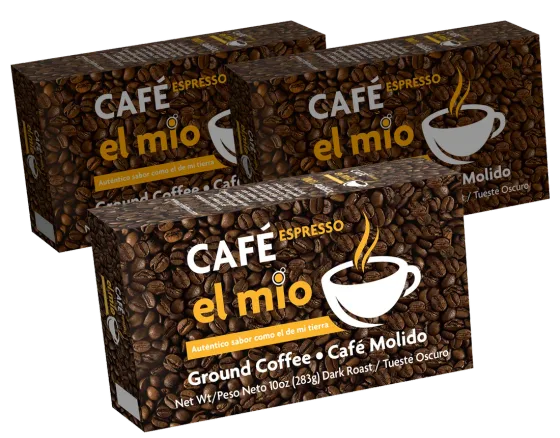
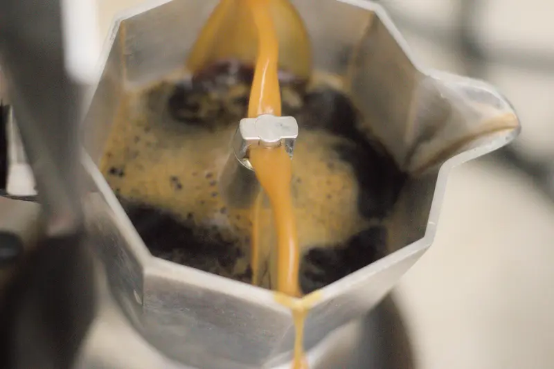
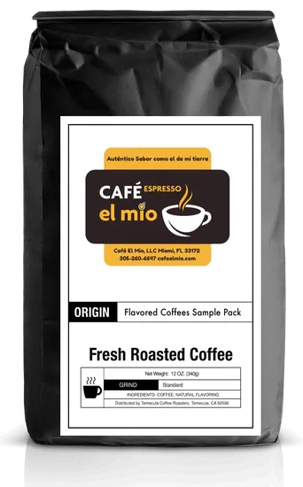
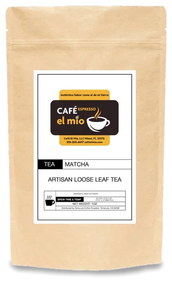
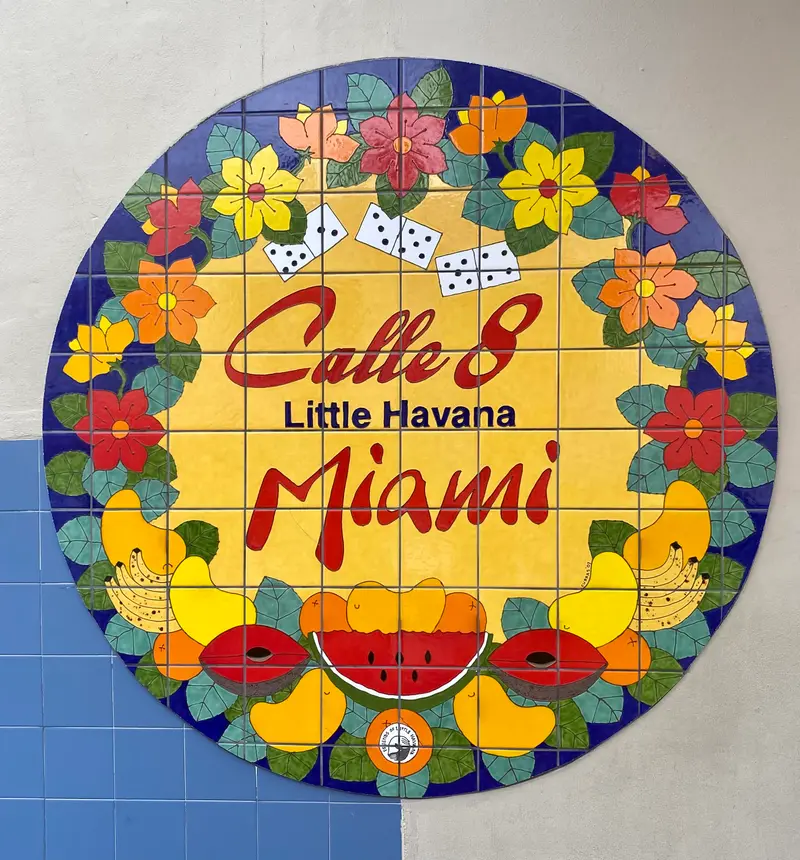
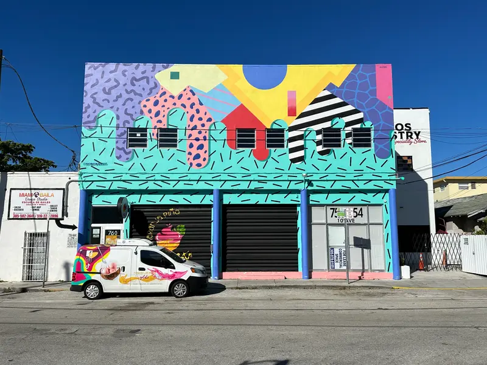
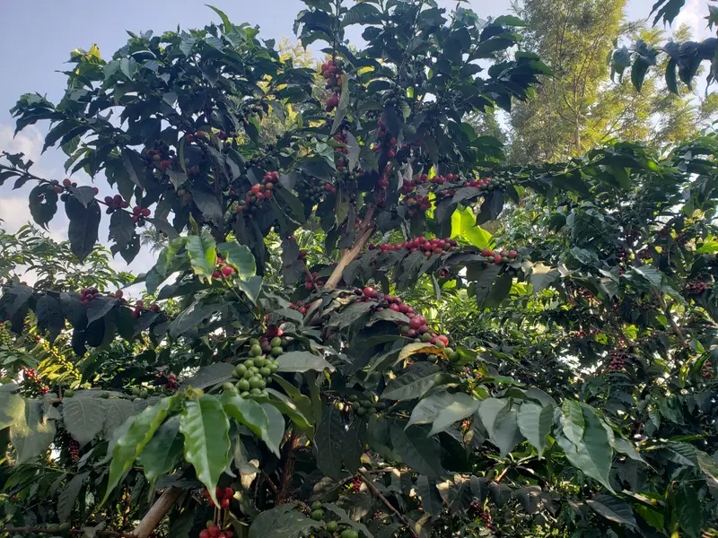
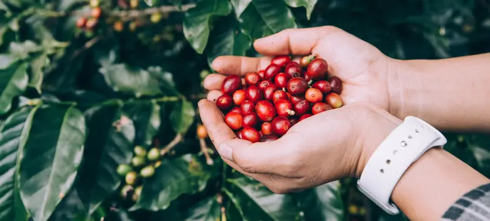
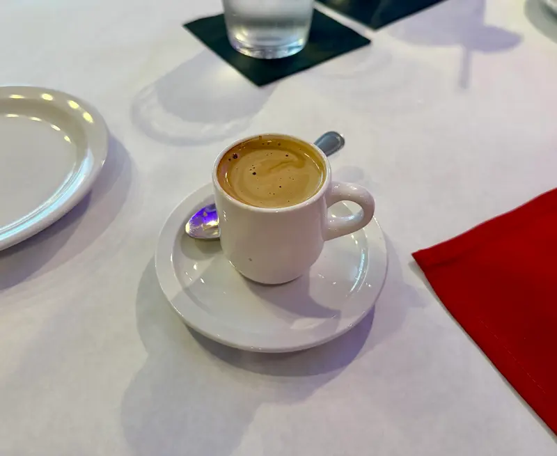
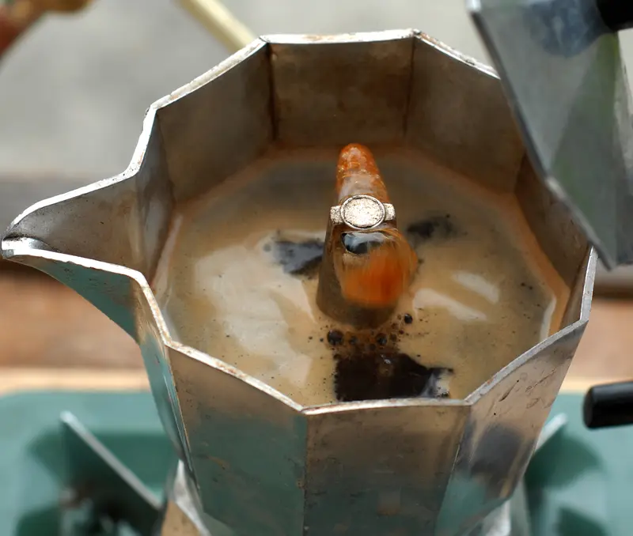

Auténtico como el de mi tierra.
Café espresso cubano, tostado y empacado en Miami. Para colar en la cafetera, batir la espumita y compartir la colada.
En Miami, el cafecito es a las 3:05.

El de siempre
Café Espresso El Mío
Un paquete de 10 onzas de café 100 % arábica, de tueste oscuro y ya molido. Fuerte, aromático y con ese amargor que pide azúcar: el que se cuela por la mañana, el que se le brinda a la visita y el de la pausa de las 3:05.
- Tueste oscuro
- Molido
- 10 oz (283 g)
- Tostado en Miami
$5.99
Ver detalles
Cómo se cuela un cafecito cubano
Cuatro pasos, una cafetera y paciencia para batir. Así se hace en casa desde siempre.
-
Prepara la cafetera
Agua hasta la válvula, El Mío en el embudo sin apretarlo y fuego medio. En unos minutos el café empieza a subir.

-
Atrapa las primeras gotas
Las primeras gotas son las más concentradas. Échalas en una taza con el azúcar: más o menos una cucharadita por cada tacita.
-
Bate la espumita
Bate con la cucharita, con energía, hasta que el azúcar y el café se vuelvan una crema clara y espesa. Ese es el secreto.
-
Sirve la colada
Vierte el resto del café sobre la espumita, revuelve suave y reparte en tacitas. El cafecito se comparte.

Más allá del espresso
Además de El Mío de siempre, tenemos cafés de un solo origen, una mezcla africana para espresso, muestras para probar y matcha. Escoge el molido y el tamaño, desde 12 onzas hasta 12 libras.
 Colombia
Naranja deshidratada, frutos rojos y chocolate.
Desde $18.99
Origen único
Colombia
Naranja deshidratada, frutos rojos y chocolate.
Desde $18.99
Origen único
 Costa Rica
Manzana dulce, pasas y miel.
Desde $18.99
Origen único
Costa Rica
Manzana dulce, pasas y miel.
Desde $18.99
Origen único
 Perú en cápsulas
12 cápsulas de una taza. Caramelo salado, dulzor sedoso y cítricos.
$18.99
Mezcla
Perú en cápsulas
12 cápsulas de una taza. Caramelo salado, dulzor sedoso y cítricos.
$18.99
Mezcla
 Espresso Africano
Mezcla de Kenia, Tanzania y Etiopía. Tueste medio-oscuro.
Desde $18.99
Para probar
Espresso Africano
Mezcla de Kenia, Tanzania y Etiopía. Tueste medio-oscuro.
Desde $18.99
Para probar
 Muestras: los favoritos
6 sobres de 2 oz con los cafés más vendidos.
$24.99
Para probar
Muestras: los favoritos
6 sobres de 2 oz con los cafés más vendidos.
$24.99
Para probar

Muestras: saborizados 6 sobres de 2 oz: vainilla, avellana, canela, caramelo, moca y canela con avellana. $24.99 Té
Matcha Té en hoja suelta, 1 oz. $21.99 La tienda Ver todos los cafés El Mío de siempre, la caja de 24, orígenes, muestras y té. Ir a la tienda

Un café que es mío, para que lo hagas tuyo
El Mío nació en Miami en 2021. Lo presentó el comunicador cubano Carlucho con una idea muy sencilla, y Gente de Zona le puso música al lanzamiento.
«Un café que es mío y quiero que usted lo haga suyo.»
Desde entonces se tuesta y se empaca en Miami, con el sabor del café que se colaba en casa, allá en la tierra.
Conoce nuestra historiaLa cultura del cafecito
Comparte tu colada con @cafeelmio








En Miami, las 3:05 de la tarde son sagradas.
Por el 305, a esa hora se hace una pausa para el cafecito. Una tacita, un buchito, cinco minutos de conversación y de vuelta a lo que estabas.
Cada día a las 3:05, hora de Miami.